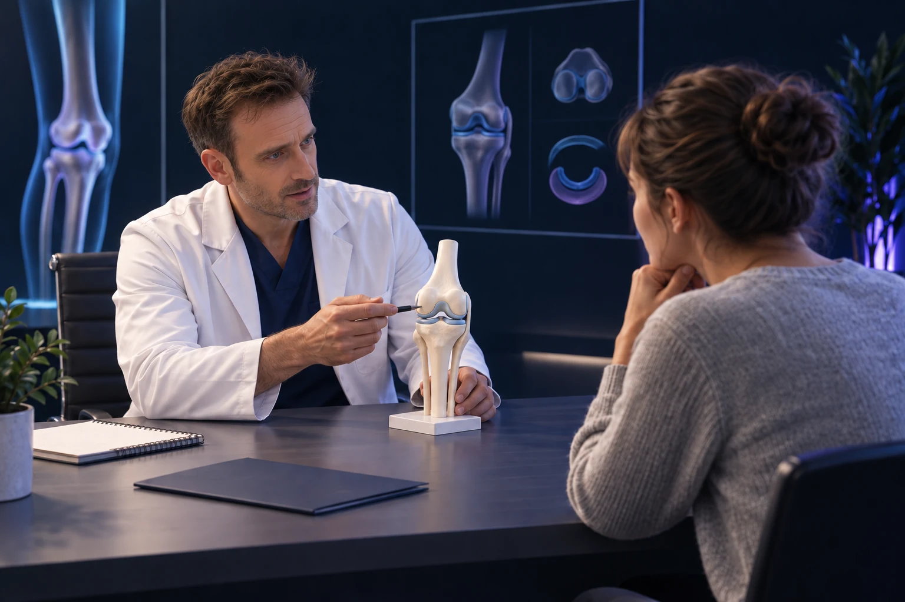

Compressions nerveuses dynamiques du membre inférieur : symptômes, bilan et traitements
Publié le

Des fourmillements qui apparaissent après quelques minutes de course, une brûlure sur le bord du pied, une douleur interne du genou ou un pied qui accroche le sol peuvent parfois traduire une souffrance nerveuse. Une compression nerveuse dynamique est favorisée par un mouvement, une position ou l’effort. Elle peut être discrète au repos. Mais toute douleur liée au sport n’est pas une compression : les muscles, les tendons, les os, le rachis et la circulation doivent aussi être considérés.
Ce dossier présente les principaux nerfs concernés, les indices utiles au diagnostic et les possibilités de traitement. Les territoires décrits sont des repères : ils se chevauchent et varient d’une personne à l’autre. Ils ne permettent pas de poser un diagnostic à partir d’une simple carte de douleur.
Qu’est-ce qu’une compression « dynamique » ?
Un nerf traverse des passages où il côtoie des os, des muscles et des enveloppes fibreuses appelées fascias. La pression ou la traction qu’il subit peut varier avec la contraction musculaire, la position d’une articulation ou un appui extérieur. Les symptômes peuvent alors apparaître pendant une activité et diminuer après son arrêt. Le caractère dynamique décrit un fonctionnement ; il ne désigne pas une maladie unique.
Une cicatrice, un kyste, une séquelle de traumatisme ou un équipement serré peuvent également intervenir. Certaines compressions sont continues mais deviennent plus sensibles à l’effort. Une douleur électrique, des picotements, une zone moins sensible ou une faiblesse orientent vers une atteinte nerveuse, sans en apporter la preuve. Les douleurs de jambe liées à l’exercice ont de nombreuses causes. Revue : douleurs de jambe liées à l’exercice.
Un nerf sensitif transmet les sensations ; un nerf moteur commande les muscles. Certains nerfs sont mixtes. Cette distinction explique pourquoi une compression peut donner uniquement une brûlure ou, au contraire, une perte de force qui doit être évaluée rapidement.
Quels nerfs peuvent être concernés ?
1. Le nerf saphène : douleur sur la face interne du genou et de la jambe
Le saphène est une branche sensitive du nerf fémoral. Il peut être comprimé dans le canal des adducteurs, ou canal de Hunter, à la partie interne de la cuisse. Les symptômes peuvent intéresser le genou interne, la face interne de la jambe et parfois le bord interne du pied. Une atteinte isolée du saphène ne provoque pas de paralysie musculaire. Revue : douleur de jambe induite par l’exercice.
Sa branche infrapatellaire passe près de la partie antéro-interne du genou. Elle peut être irritée après un traumatisme ou une intervention, notamment dans une cicatrice ; une lésion ou un névrome douloureux n’est pas nécessairement une compression dynamique. Une hypersensibilité cutanée au contact mérite d’être décrite, même si les mouvements du genou restent possibles. Publication sur les douleurs du saphène après chirurgie du genou.
Le diagnostic doit être distingué d’une douleur méniscale ou tendineuse. La compression du canal des adducteurs est rare ; un cas clinique favorable après décompression ne permet pas de promettre le même résultat à tous les patients. Cas clinique et revue du diagnostic différentiel, 2025.
2. Le nerf fibulaire commun, anciennement « SPE »
SPE signifie sciatique poplité externe : c’est l’ancien nom du nerf fibulaire commun, également appelé péronier commun. Il contourne le col de la fibula, anciennement péroné, sur le côté externe du genou, où il est particulièrement exposé à la compression.
Un appui prolongé, des positions accroupies répétées, une attelle ou un kyste peuvent être en cause. Des troubles sensitifs de la partie externe de la jambe et du dessus du pied peuvent s’accompagner d’une difficulté à relever le pied ou les orteils. Le pied peut alors accrocher le sol ou « claquer » à la marche. Revue : neuropathies du nerf fibulaire.
3. Le nerf fibulaire superficiel : symptômes parfois surtout à l’effort
Cette branche passe de la profondeur vers la peau à travers le fascia de la jambe. Cette zone de sortie peut constituer un point de conflit. Une brûlure ou des fourmillements peuvent apparaître sur le bas de la face externe de la jambe et une grande partie du dessus du pied, notamment pendant l’exercice.
L’espace entre le premier et le deuxième orteil est habituellement épargné. Le relèvement du pied reste généralement conservé dans une atteinte isolée ; les troubles moteurs éventuels dépendent du niveau de la lésion. Une petite hernie musculaire à travers le fascia peut parfois participer au conflit. Revue diagnostique des compressions nerveuses du membre inférieur.
4. Le nerf fibulaire profond : le tunnel tarsien antérieur
Le fibulaire profond peut être comprimé à l’avant de la cheville, sous les structures qui maintiennent les tendons extenseurs, ou sur le dessus du pied. Des chaussures ou des lacets trop serrés peuvent aggraver les symptômes. Une gêne dorsale et des picotements dans le premier espace entre les orteils sont évocateurs, mais non spécifiques.
Cette compression distale n’a pas les mêmes conséquences qu’une atteinte du nerf fibulaire commun au genou : elle n’entraîne pas nécessairement un pied tombant. Revue : atteintes fibulaires profondes et superficielles.
5. Le nerf tibial : du mollet au tunnel tarsien
Le nerf tibial peut subir un conflit proximal, notamment sous l’arcade du muscle soléaire. Une douleur du mollet accompagnée de troubles sensitifs plantaires et, parfois, d’une faiblesse oriente le bilan. Cette localisation est différente d’une compression à la cheville. Revue : neuropathie tibiale proximale.
Au tunnel tarsien postérieur, le nerf passe derrière la malléole interne. Sa compression peut provoquer brûlures, picotements ou engourdissement sous le pied, parfois majorés par la station debout et la marche. Le talon peut être atteint ou épargné selon les branches concernées. Une masse, des séquelles traumatiques ou des facteurs mécaniques peuvent participer. Aucun symptôme ni test isolé ne confirme tous les cas. Revue : syndrome du tunnel tarsien.
6. Les branches plantaires, le nerf de Baxter et les nerfs digitaux
Le nerf plantaire médial peut être comprimé chez le coureur. Le nerf de Baxter, première branche du plantaire latéral, peut être impliqué dans une douleur du talon ressemblant à une atteinte de l’aponévrose plantaire.
À l’avant-pied, le névrome de Morton concerne un nerf digital et peut provoquer une douleur avec brûlure entre les orteils, souvent influencée par le chaussage. Revue anatomique et radiologique des conflits nerveux.
7. Le nerf sural : bord externe du pied et région externe de la cheville
Le sural est sensitif. Son irritation peut donner une douleur ou une hypersensibilité sur l’arrière et le côté externe de la cheville, jusqu’au bord externe du pied. Il n’entraîne pas de déficit moteur dans une atteinte isolée. Revue anatomique : nerf sural.
8. Plus haut : nerf sciatique, nerf cutané latéral, fémoral et obturateur
Le syndrome fessier profond correspond à une souffrance du nerf sciatique dans la région fessière, en dehors d’une origine discale lombaire. Une douleur de fesse irradiant vers la cuisse, parfois aggravée en position assise ou par certains mouvements de hanche, peut orienter le bilan. Le piriforme n’est qu’une des structures potentiellement impliquées : toutes les sciatiques ne sont pas des « syndromes du piriforme ». Revue : syndrome fessier profond.
Le nerf cutané latéral de la cuisse, anciennement fémoro-cutané, peut provoquer une méralgie paresthésique : brûlure ou engourdissement de la face antéro-externe de la cuisse, sans perte de force dans une atteinte isolée. Une compression près du ligament inguinal, notamment par un vêtement ou une ceinture serrée, peut intervenir. AAOS : méralgie paresthésique.
Les atteintes du fémoral et de l’obturateur sont plus rares. Une faiblesse pour tendre le genou peut évoquer le premier ; une douleur de l’aine ou de la face interne de la cuisse avec faiblesse des adducteurs peut faire rechercher le second. Elles justifient un bilan spécialisé et ne doivent pas être qualifiées de dynamiques sans arguments. Revue : atteintes fémorales et obturatrices.
Quelles autres causes faut-il rechercher ?
Une douleur reproductible à l’effort peut aussi venir d’un syndrome des loges chronique d’effort, d’une lésion osseuse de fatigue, d’une tendinopathie ou d’une origine vasculaire, notamment un piège de l’artère poplitée. Un syndrome des loges peut lui-même s’accompagner de symptômes nerveux. Les explorations choisies ne sont pas les mêmes : examen vasculaire et examens adaptés à l’effort, imagerie osseuse ou, dans certaines situations, mesure des pressions musculaires. Revue du diagnostic différentiel des douleurs de jambe chez le sportif.
Une racine nerveuse comprimée dans le dos peut produire une douleur ou une faiblesse ressemblant à une atteinte périphérique. Une neuropathie plus diffuse doit aussi être envisagée selon le contexte. Le diagnostic ne consiste donc pas seulement à trouver un point douloureux sur le trajet d’un nerf. Revue des douleurs chroniques de jambe chez le sportif.
Comment établir le diagnostic ?
L’entretien et un examen ciblé
Le professionnel recherche le trajet des symptômes, leur délai d’apparition, leur disparition après l’arrêt et les positions qui les déclenchent. Il examine la sensibilité, la force, les réflexes, la marche et les régions voisines. La percussion d’un nerf peut reproduire des fourmillements, ce qu’on appelle un signe de Tinel ; ce signe n’est pas une preuve à lui seul.
Si les symptômes surviennent uniquement pendant une activité, une évaluation adaptée au mouvement ou après un effort encadré peut être utile. Elle doit rester sûre : il n’est pas demandé de provoquer un déficit ou une douleur intense pour « démontrer » le problème. Revue clinique : présentation et bilan des douleurs d’effort.
L’électroneuromyogramme (ENMG)
L’ENMG étudie la conduction nerveuse et, selon les besoins, l’activité de certains muscles. Il aide à localiser et apprécier une atteinte et à discuter une origine plus proximale. Ses résultats dépendent notamment du nerf exploré, de la sévérité et du moment de l’examen. Un résultat normal n’écarte pas toutes les compressions, notamment certaines formes du tunnel tarsien. Limites de l’ENMG dans le tunnel tarsien.
Mais un ENMG normal ne prouve pas non plus une compression « cachée ». Il conduit à réexaminer l’ensemble des arguments et les diagnostics possibles. Le compte rendu doit être interprété avec l’examen clinique, plutôt que comme une réponse universelle par oui ou non.
L’échographie, éventuellement dynamique, et l’IRM
L’échographie peut étudier un nerf accessible et ses rapports avec les tissus voisins ; l’IRM peut rechercher une cause profonde ou des conséquences musculaires. Ces examens complètent le bilan et ne remplacent pas sa cohérence clinique. Revue de la démarche diagnostique.
Selon le site, une échographie pendant un mouvement peut aider à rechercher un conflit positionnel, une modification locale ou une hernie musculaire. Ses possibilités dépendent de l’accès au nerf et de l’expérience de l’opérateur. Une image inhabituelle doit correspondre aux symptômes ; elle n’est pas automatiquement la cause de la douleur. Publication : échographie dynamique d’une hernie musculaire avec conflit fibulaire superficiel.
Le bloc anesthésique ciblé
Dans certaines situations, une injection d’anesthésique autour d’un nerf, réalisée par un professionnel, peut contribuer à localiser la douleur. Un soulagement transitoire apporte un argument, mais la diffusion du produit et d’autres facteurs limitent l’interprétation. Il ne garantit pas le résultat d’une chirurgie. Cette démarche est notamment rapportée pour le saphène. Publication sur les blocs du nerf saphène.
Quels traitements peut-on proposer ?
Adapter les contraintes et accompagner la récupération
La première étape peut consister à réduire une compression extérieure, adapter une posture, le chaussage ou l’activité, et traiter la cause identifiée. Le programme de rééducation est individualisé. Il ne consiste pas à étirer agressivement un nerf douloureux. Des traitements de la douleur peuvent être discutés en tenant compte des contre-indications et de leurs effets indésirables. Prise en charge des compressions dans les douleurs de jambe.
Demandez ce que l’adaptation cherche à obtenir : marcher plus longtemps sans symptômes, retrouver un mouvement ou diminuer les réveils nocturnes. Une échéance de contrôle permet de vérifier les progrès et de modifier la stratégie si nécessaire. Une faiblesse nouvelle ou croissante nécessite une réévaluation, même si un traitement est déjà en cours.
Infiltrations et techniques percutanées : une place à discuter
Un geste ciblé peut être proposé dans certaines indications. Les techniques, les produits et le niveau de preuve varient selon le nerf. L’hydrodissection vise à séparer le nerf des tissus voisins par injection ; elle ne doit pas être présentée comme une solution systématique ou un traitement garanti. Les données sur les traitements peu invasifs restent limitées pour plusieurs syndromes. Revue systématique des traitements du tunnel tarsien.
Quand envisager une décompression chirurgicale ?
Une libération nerveuse peut être discutée lorsque le site et la cause sont suffisamment documentés, notamment si les symptômes restent invalidants malgré un traitement adapté. Une cause compressive précise ou un déficit évolutif peuvent modifier les priorités. Il n’existe pas de durée d’attente identique pour tous les nerfs et toutes les situations.
L’objectif est de supprimer un conflit identifié. Cela ne garantit pas la récupération d’un nerf déjà lésé. La douleur peut persister, la récupération être incomplète et une récidive survenir. Les risques comprennent notamment une atteinte nerveuse, une cicatrice douloureuse, un hématome ou une infection. Les résultats publiés varient selon les patients et les études ; ils ne constituent pas une promesse individuelle. Revue des résultats et limites de la chirurgie du tunnel tarsien.
Quels signes nécessitent un avis rapide ?
- Un pied qui tombe ou une faiblesse nouvelle ou croissante : demandez rapidement un avis médical, particulièrement après un traumatisme ou une opération. NHS : pied tombant.
- Des douleurs lombaires ou des jambes avec troubles urinaires, perte de contrôle des selles ou insensibilité du périnée : évaluation urgente, sans attendre une consultation programmée. Contactez le 15 ou le 112. NHS : signes d’alerte neurologiques.
- Une douleur brutale très intense, une jambe tendue et gonflée ou un pied froid et pâle : une urgence musculaire ou vasculaire doit être éliminée ; contactez le 15 ou le 112. NHS : syndrome des loges aigu ; Society for Vascular Surgery : ischémie aiguë.
Ces situations ne doivent pas être banalisées sous l’étiquette de compression dynamique liée au sport.
Comment préparer sa consultation ?
Une description précise du déclenchement vaut souvent mieux que le seul mot « douleur ». Préparez quelques informations :
- Le trajet exact : dessinez la zone de brûlure, d’engourdissement ou de douleur.
- L’activité et le délai d’apparition : course, marche, position assise, accroupissement, chaussures ou équipement.
- Le temps nécessaire pour que les symptômes diminuent après l’arrêt, et leur éventuelle persistance au repos.
- L’existence d’une faiblesse, d’un pied qui accroche, d’un blocage ou de chutes.
- Les traumatismes, opérations, traitements et examens déjà réalisés, avec leurs comptes rendus et images.
Si un phénomène visible apparaît spontanément, une photo peut aider à le décrire ; ne reproduisez pas volontairement un symptôme dangereux. Lors du rendez-vous, demandez quel nerf est suspecté, à quel endroit, avec quels arguments et quelles autres causes ont été envisagées. Si un traitement est proposé, faites préciser son objectif, ses limites et les critères de réévaluation.
Pour organiser un bilan au cabinet du Dr François Lozach à Sète, retrouvez les coordonnées et informations de consultation. Selon les constatations, un avis neurologique, radiologique, vasculaire ou de médecine physique peut compléter l’évaluation.
Ce dossier constitue une information générale. Il ne remplace pas l’examen ni les consignes individuelles d’un professionnel de santé. Les compressions décrites ne sont pas toutes dynamiques, et leur traitement dépend d’un diagnostic précis.